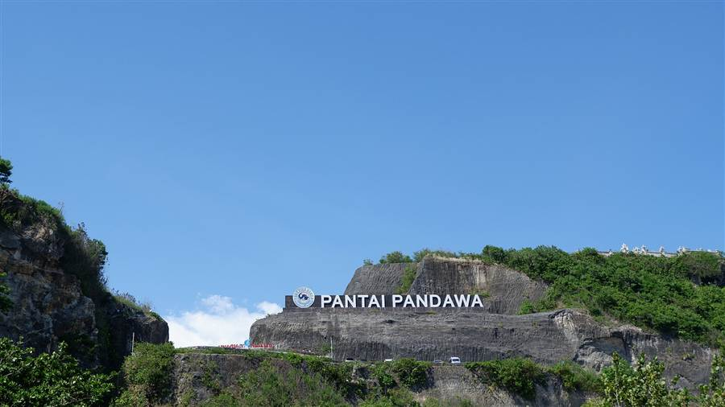

Profil Lokus: Transformasi Desa Kutuh
Desa Kutuh berdiri di atas perbukitan kapur di ujung selatan Bali, berbatasan langsung dengan pesisir yang kini menjadi ikon pariwisata: Pantai Pandawa dan Pantai Gunung Payung. Sebelum tahun 1997, mayoritas warganya adalah petani rumput laut dengan penghasilan yang bergantung pada musim, sementara akses ke pantai tertutup dinding tebing.
Titik balik terjadi ketika pemerintah desa dan masyarakat memotong tebing kapur untuk membuka akses ke Pantai Pandawa. Langkah tersebut menjadi awal transformasi ekonomi berbasis potensi lokal yang dikelola secara kelembagaan melalui BUMDes, Badan Usaha Milik Desa Adat (BUMDA), dan Lembaga Perkreditan Desa (LPD). BUMDes Kutuh berdiri pada 2016 dengan modal awal Rp1,8 miliar dari alokasi dana desa, menjadi BUMDes pertama di Bali yang berstatus Pengusaha Kena Pajak pada 2017, dan dikukuhkan sebagai badan hukum BUMDes Manik Sedana melalui Peraturan Desa Kutuh Nomor 12 Tahun 2021.
Keberhasilan Desa Kutuh tidak semata soal angka. Seluruh strategi pembangunan berpijak pada filosofi Tri Hita Karana, keharmonisan manusia dengan Tuhan, sesama, dan alam, yang diterjemahkan menjadi tata kelola partisipatif: musyawarah desa sebagai forum perencanaan anggaran, kewajiban merekrut tenaga kerja dari warga Kutuh, serta alokasi 5 persen laba BUMDes untuk kegiatan sosial dan pendidikan.

Foto: Jenhan Putra, CC BY-SA 4.0, Wikimedia Commons

Foto: Alharomain354, CC BY-SA 4.0, Wikimedia Commons

Foto: Chaecilly, CC BY-SA 4.0, Wikimedia Commons
Paparan Kepala Desa: Pokok dan Kesimpulan
Ringkasan materi yang disampaikan Perbekel Kutuh I Wayan Mudana, S.T., kepada peserta PKA Angkatan XVIII Balai Diklat Keuangan Denpasar pada 27 Juli 2026, dengan tema Transformasi Desa Mandiri Mewujudkan Masyarakat Kutuh Berdaya Saing Global.
Paparan dibuka dengan tesis yang tegas bahwa kemandirian desa tidak lahir dari besarnya bantuan yang diterima, melainkan dari kemauan, kemampuan, dan keberanian mengambil keputusan. Tiga kata yang diringkas menjadi 3K itu menjadi penutup sekaligus benang merah seluruh materi.
Perjalanan Desa Kutuh dimulai jauh sebelum kemerdekaan sebagai desa yang berdiri sendiri, sebelum dilebur ke dalam Desa Ungasan pada masa pendudukan Jepang tahun 1942 dan hanya berstatus banjar dinas. Perjuangan pemekaran yang dirintis sejak 1997 membuahkan hasil pada 12 Maret 2002 ketika Kutuh kembali ditetapkan sebagai desa definitif. Secara ekonomi, warga semula bertumpu pada pertanian lahan kering, lalu beralih ke budidaya rumput laut yang mencapai puncaknya pada 2007 hingga mampu memasok kebutuhan ekspor dan mengantar desa ke angka nol persen kemiskinan pada 2011. Ketika komoditas itu runtuh akibat hama dan perubahan ekosistem laut, pembukaan akses ke Pantai Melasti yang semula ditujukan untuk mempermudah upacara adat justru membuka pintu masuknya wisatawan. Melalui musyawarah desa, pemerintah desa sepakat menggarap sektor pariwisata secara serius, dan sejak 2017 Desa Kutuh berstatus desa mandiri dengan nol persen kemiskinan sekaligus nol persen pengangguran.
Bagian tata kelola menjadi porsi terbesar paparan. Perbekel menempatkan kepemimpinan transformatif sebagai penggerak budaya antikorupsi melalui lima jalur, yaitu visi bersama, ekosistem kerja kolaboratif berupa ruang kerja terpadu, gerai pelayanan satu pintu, sistem penghargaan berbasis kinerja, dan pemberian ruang inovasi bagi perangkat desa. Ruang kerja terpadu disebut secara khusus sebagai pengendali gratifikasi, karena pelayanan berlangsung terbuka dan tidak lagi tertutup di ruang masing masing. Pengelolaan keuangan berjalan di atas Siskeudes dengan transaksi non tunai serta publikasi berkala melalui baliho, papan pengumuman, videotron, situs desa, dan media sosial. Indeks Kepuasan Masyarakat 2025 tercatat 87,15 dengan kategori baik, sementara sembilan belas pengaduan yang masuk sepanjang 2025 hingga 2026 seluruhnya telah ditindaklanjuti.
Pada model kelembagaan ekonomi, Perbekel menegaskan pembagian peran yang selama ini kerap disalahpahami. BUMDA Bhaga Utsaha Manunggal Desa Adat, yang dibentuk melalui Perdes Nomor 8 Tahun 2014 bahkan sebelum Undang Undang Desa terbit, mengelola potensi wisata milik Desa Adat melalui empat unit usaha, yaitu daya tarik wisata Pantai Pandawa, daya tarik wisata Gunung Payung Cultural Park, pengelolaan barang dan jasa pariwisata, serta atraksi paragliding. Adapun BUMDesa Manik Sedana yang berdiri pada 2016 memegang tiga unit usaha di luar pariwisata, yaitu pengelolaan sampah, Pancali SPA, serta barang dan jasa non pariwisata. Pembagian pasar inilah yang membuat keduanya saling melengkapi tanpa tumpang tindih. Pada 2025 laba BUMDA tercatat Rp15,01 miliar dan laba BUMDesa Rp884,85 juta, dengan serapan tenaga kerja masing masing 121 orang dan 27 orang. Penyertaan modal ke BUMDesa sejak 2016 berjumlah Rp2,13 miliar.
Tata kelola persampahan disajikan sebagai inovasi unggulan dengan alur empat tahap, dari instrumen kebijakan berupa peraturan desa, edukasi dan perubahan perilaku di hulu, pengangkutan terpilah oleh unit BUMDesa, hingga pengolahan di hilir pada TPST Tebo Kauh. Fasilitas yang dibangun pada 2024 di atas lahan Desa Adat seluas dua puluh are itu mempekerjakan sembilan belas orang dan menangani 8,5 sampai 15 ton sampah per hari dengan tingkat penanganan mencapai seratus persen, melayani 1.019 pelanggan dari 1.319 kepala keluarga. Melalui inovasi Tebo Green Loop, sampah organik diolah menjadi kompos dan echo enzyme, sedangkan residu pembakaran dicetak menjadi paving block yang kembali dipakai untuk fasilitas umum. Pemakaian plastik sekali pakai pada kegiatan pemerintah desa dilaporkan turun sembilan puluh delapan persen. Kebersihan dan estetika lingkungan memperoleh porsi 12,7 persen dari rencana belanja desa 2025 atau sekitar Rp4 miliar, dengan total penyiapan sarana prasarana termasuk TPST melampaui Rp7 miliar.
Paparan ditutup dengan dampak yang melampaui batas desa. Dalam dua tahun terakhir masuk enam puluh lima investasi dengan nilai lebih dari Rp11,7 triliun, mayoritas pada sektor akomodasi wisata. Sepanjang 2023 hingga 2024 sekitar enam ribu orang dari 102 instansi se Indonesia berkunjung untuk belajar, dan sebagian di antaranya telah berhasil mereplikasi model Kutuh serta meraih prestasi, di antaranya Desa Tegal Harum, Desa Ciberuwetan, dan Desa Darmasaba. Bagi peserta pelatihan, pesan yang paling relevan adalah bahwa seluruh capaian tersebut bertumpu pada keberanian mengambil keputusan sulit pada waktu yang tepat, bukan pada ketersediaan sumber daya yang berlimpah sejak awal.
Posisi Keuangan Desa
Data transparansi anggaran APBDesa 2026 bersumber dari Siskeudes yang dipublikasikan pada situs resmi Desa Kutuh, posisi realisasi per Juli 2026. Panjang batang menunjukkan realisasi terhadap anggaran, dan batang berwarna tembaga menandai pos yang realisasinya telah melampaui target. Persentase tertera pada setiap baris.
Realisasi Pendapatan per Sumber
Realisasi Belanja per Bidang
Dua hal menonjol dari struktur keuangan ini. Pertama, pos Hasil Usaha Desa, yang di dalamnya termasuk kontribusi BUMDes Manik Sedana, telah melampaui target tahunannya sejak pertengahan tahun (110,36%), menandakan mesin ekonomi desa bekerja di atas ekspektasi. Kedua, sumber pendapatan terbesar desa adalah Bagi Hasil Pajak dan Retribusi dengan anggaran Rp17,37 miliar, cerminan besarnya aktivitas ekonomi pariwisata di wilayah Kutuh yang kembali ke desa melalui mekanisme fiskal Kabupaten Badung.
Business Model Canvas BUMDes Manik Sedana
Kanvas berikut memetakan model bisnis BUMDes Manik Sedana secara menyeluruh, disusun dari telaah Peraturan Desa Kutuh Nomor 12 Tahun 2021, publikasi ilmiah terkini, dan analisis kelompok. Klik setiap blok untuk membaca rinciannya.
Sorotan: Pariwisata Berbasis Desa Adat
Kekuatan utama model bisnis BUMDes Manik Sedana terletak pada pengelolaan destinasi wisata berbasis desa adat. Pantai Pandawa dan Pantai Gunung Payung dikelola dengan melibatkan masyarakat lokal dalam perencanaan, operasional, dan pelestarian budaya, sehingga omset wisata sekitar Rp20 miliar per tahun berputar kembali ke dalam desa. Pendekatan ini menyeimbangkan misi komersial dan pelayanan publik, sejalan dengan filosofi Tri Hita Karana yang menempatkan harmoni manusia, budaya, dan alam sebagai landasan setiap keputusan usaha.
Lesson Learnt
Enam pelajaran utama yang relevan direplikasi oleh organisasi sektor publik, dirumuskan dari praktik terbaik lokus.
Hambatan dibaca ulang menjadi aset
Tebing kapur yang selama puluhan tahun mengurung desa dari pantainya justru dipotong dan dijadikan gerbang masuk kawasan wisata. Modal awal Rp1,8 miliar dari dana desa kini menopang omset wisata sekitar Rp20 miliar per tahun. Yang menggerakkan bukan tambahan anggaran, melainkan keberanian membaca ulang apa yang selama ini dianggap kendala.
Pemisahan peran meredam benturan nilai
BUMDes memegang fungsi komersial, sedangkan BUMDA menjaga nilai adat dan modal sosial. Pemisahan ini mencegah logika bisnis menggerus legitimasi budaya, sekaligus mencegah urusan adat menyandera keputusan usaha. Keduanya bersinergi justru karena mandatnya tidak dicampur.
Formalisasi diambil lebih awal dari kewajiban
Status Pengusaha Kena Pajak pertama di Bali diraih pada 2017 dan badan hukum ditetapkan lewat Perdes Nomor 12 Tahun 2021, keduanya sebelum tekanan regulasi memaksa. Legalitas dini inilah yang kemudian membuka pintu kemitraan investor dan kontrak berskala korporasi.
Pemberdayaan dikunci di hulu keputusan
Setiap rencana unit usaha baru lebih dulu diuji kecocokannya dengan warga, dan pekerjanya wajib berasal dari Desa Kutuh. Karena syarat ini melekat pada keputusan pembukaan usaha dan bukan pada imbauan, setiap pertumbuhan usaha otomatis menjadi pertumbuhan lapangan kerja. Hasilnya lebih dari 70 tenaga kerja lokal terserap sepanjang 2020 sampai 2024.
Komitmen sosial dikunci dalam formula
Alokasi 5 persen laba BUMDes untuk kegiatan sosial dan pendidikan ditetapkan sebagai aturan tetap, bukan kebijakan tahunan yang bisa menguap ketika kas sedang ketat. Redistribusi manfaat menjadi bagian dari model bisnis, bukan kemurahan hati yang bergantung suasana.
Nilai bersama sebagai dasar untuk menolak
Tri Hita Karana bekerja layaknya kerangka ESG versi desa dan memberi legitimasi budaya untuk menolak peluang usaha yang merusak harmoni. Karena nilai itu dipegang bersama, penolakan tidak terbaca sebagai hambatan birokrasi, melainkan sebagai konsistensi yang dipahami warga.
Diagnosa dan Ide Penyelesaian
Sesuai Panduan Wawancara Studi Lapangan, bagian ini memetakan kesenjangan kinerja lokus, selisih antara kondisi saat ini dan kondisi yang diharapkan, lalu menawarkan solusi kreatif yang realistis. Pemetaan berikut merupakan draft pra-lapangan yang disusun dari telaah literatur dan akan divalidasi dengan data wawancara.
| No | Kondisi Saat Ini | Kondisi Diharapkan | Akar Masalah (Dugaan) | Sumber Data |
|---|---|---|---|---|
| 1 | Pendapatan desa besar, tetapi bukti peningkatan kesejahteraan per kapita warga belum terdokumentasi eksplisit. | Dampak ekonomi terukur dan terdistribusi merata hingga level rumah tangga. | Belum ada sistem pengukuran dampak kesejahteraan yang sistematis dan terpublikasi. | Nugroho dkk. (2025) |
| 2 | Toko grosir milik BUMDes kurang berkembang, kalah bersaing dengan ritel modern berjejaring. | Seluruh unit usaha sehat dan berdaya saing. | Model bisnis unit grosir belum terdiferensiasi dari ritel modern. | Nugroho dkk. (2025) |
| 3 | Akses air bersih terbatas karena topografi bukit kapur; baru tersedia empat titik sumber air. | Layanan air bersih andal bagi warga dan penopang industri wisata. | Infrastruktur dasar belum sebanding dengan laju pertumbuhan ekonomi kawasan. | Nugroho dkk. (2025) |
| 4 | Keberhasilan desa melekat kuat pada figur kepala desa dan pimpinan BUMDes yang visioner. | Kinerja organisasi berkelanjutan lintas pergantian kepemimpinan. | Sistem kaderisasi dan standardisasi tata kelola belum sepenuhnya terlembaga. | Nugroho dkk. (2025); analisis kelompok |
| 5 | Data kinerja usaha belum seluruhnya terpublikasi dan belum mendukung pengambilan keputusan real time. | Data kinerja terintegrasi, real time, dan transparan bagi publik. | Digitalisasi pelaporan antar unit usaha masih parsial. | Nugroho dkk. (2025); analisis kelompok |
| No | Masalah | Ide Solusi Kreatif / Inovatif | Manfaat | Kelayakan |
|---|---|---|---|---|
| 1 | Dampak kesejahteraan belum terukur | Dashboard Kesejahteraan Warga: survei berkala pendapatan rumah tangga terintegrasi data BUMDes dan APBDes, ditampilkan di situs desa. | Bukti dampak untuk kebijakan, transparansi, dan replikasi nasional. | Tinggi |
| 2 | Unit grosir kalah bersaing | Reposisi grosir menjadi hub logistik UMKM dan pemasok kebutuhan hotel serta villa dengan sistem pemesanan digital. | Unit kembali produktif dan menyerap produk warga. | Tinggi |
| 3 | Keterbatasan air bersih | Kemitraan SPAM dan pemanenan air hujan pada fasilitas publik dan destinasi wisata milik BUMDes. | Ketahanan air bagi warga dan industri wisata. | Sedang |
| 4 | Ketergantungan pada figur pemimpin | Program kaderisasi manajer BUMDes bersertifikat serta SOP korporasi desa yang terdokumentasi dan diaudit berkala. | Keberlanjutan kinerja lintas suksesi kepemimpinan. | Tinggi |
| 5 | Pelaporan belum real time | Integrasi sistem informasi keuangan seluruh unit usaha menuju smart village dengan laporan publik triwulanan. | Keputusan berbasis data dan penguatan akuntabilitas. | Tinggi |
Dokumentasi Kunjungan
Rekaman visual kunjungan lapangan ke BUMDes Manik Sedana Desa Kutuh pada 27 Juli 2026. Klik gambar untuk melihat ukuran penuh.
dokumentasi/, lalu datanya didaftarkan pada berkas dokumentasi/daftar-foto.json. Setiap foto memuat judul, keterangan, waktu, lokasi, dan nama pengambil gambar. Galeri akan tampil otomatis begitu daftar terisi, tanpa perlu mengubah halaman ini.
Kelompok II
Ketua kelompok: Rully Devriantoro. Pembagian peran penyusunan laporan sebagai berikut.
- Khusnul Arifin
- Muhammad Ali Shodiqin
- Donny Maha Putra
- Agus Hery Winarso
- Muslim
- Didit Prayudi Sidharta
- Wahyu Indrawan
- Hari Santoso
- Umardani Yusuf Wahyudi
- Moch. Faisol
- Arifin Rosidi
- Lia Sahara
- Cahyo Prasetiadi
- Nur Fathoni
- Pujo Hariyanto
- Tulus Suparto
- Ranu Fatah Wijoyo